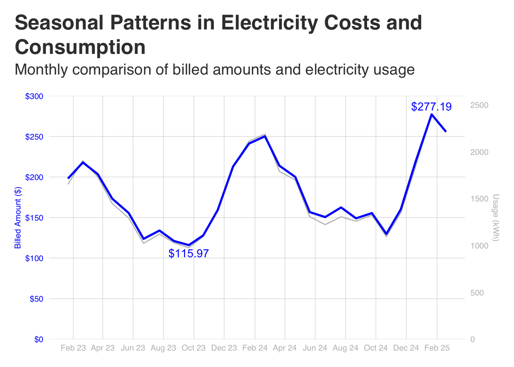
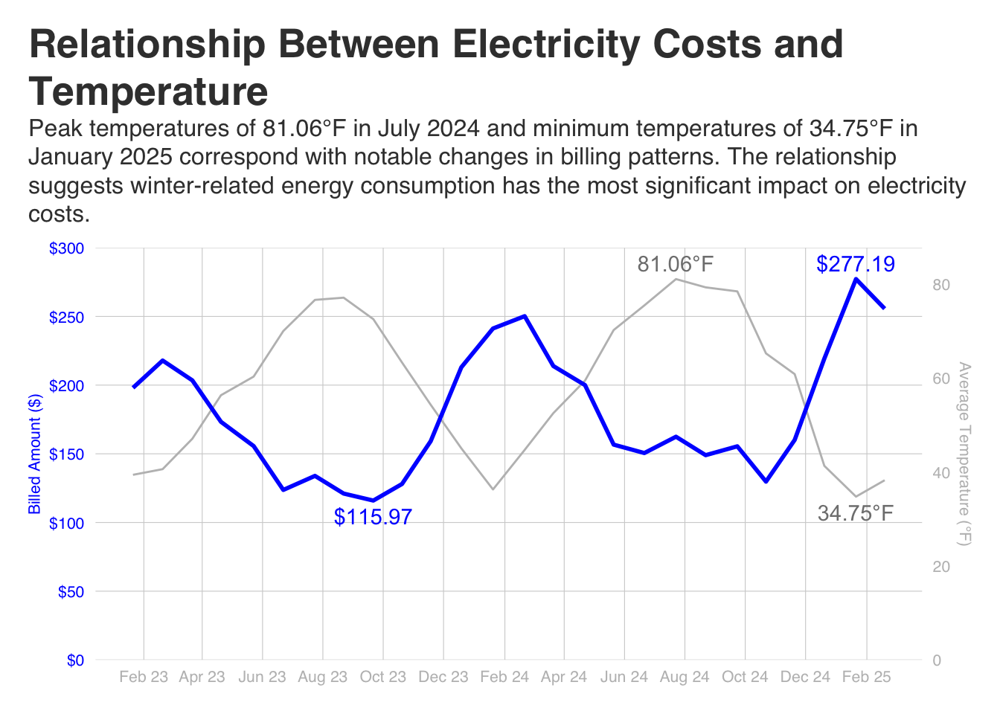

library(tidyverse)
library(janitor)
library(ggtext)Visualizing My Electric Usage Over Time
Trending Alier’s Electric Usage
This tutorial ilustrates how to plot timer series data with the gplot2 library.
Loading Libraries
Importing Data
electric_bill <-
read_csv(
"../00-input/Usage_History (2).csv",
show_col_types = FALSE
) |>
janitor::clean_names() |>
arrange(read_date) |>
rename(billed_amount = billed_amt) |>
mutate(
billed_amount = parse_number(billed_amount),
billed_amount_label = case_match(
billed_amount,
max(billed_amount) ~ billed_amount,
.default = 0
)
)scaling_factor <- max(electric_bill$billed_amount) / max(electric_bill$usage)
cost_usage_plot <-
ggplot(
electric_bill,
aes(x = read_date)
) +
geom_line(
aes(y = usage * scaling_factor, color = "Usage", group = 1),
show.legend = FALSE
) +
geom_line(
aes(y = billed_amount, color = "Billed Amount", group = 1),
linewidth = 1,
show.legend = FALSE
) +
# Maximum value label
geom_text(
data = electric_bill %>%
filter(billed_amount == max(billed_amount)),
aes(x = read_date, y = billed_amount,
label = scales::dollar(max(billed_amount))),
vjust = -0.5,
color = "blue"
) +
# Minimum value label
geom_text(
data = electric_bill %>%
filter(billed_amount == min(billed_amount)),
aes(x = read_date, y = billed_amount,
label = scales::dollar(min(billed_amount))),
vjust = 1.5, # Position below the point
color = "blue"
) +
scale_y_continuous(
labels = scales::dollar_format(),
limits = c(0, 300),
breaks = seq(0, 300, 50),
expand = c(0, 0),
sec.axis = sec_axis(~ . / scaling_factor, name = "Usage (kWh)")
) +
scale_x_date(date_breaks = "2 month", date_labels = "%b %y") +
scale_color_manual(
name = "Metrics",
values = c("Billed Amount" = "blue", "Usage" = "grey")
) +
labs(
title = "Seasonal Patterns in Electricity Costs and Consumption",
subtitle = "Monthly comparison of billed amounts and electricity usage",
y = "Billed Amount ($)",
x = "Billing Date"
) +
ggthemes::theme_fivethirtyeight() +
theme(
plot.title = element_textbox_simple(
size = 20,
face="bold",
margin = margin(b = 5),
lineheight = 1.2
),
plot.subtitle = element_text(size = 15, margin = margin(b = 18)),
plot.title.position = "plot",
panel.background = element_blank(),
plot.background = element_blank(),
legend.position = "none",
axis.title.y.right = element_text(color = "grey", size = 8),
axis.title.y.left = element_text(color = "blue", size = 8),
axis.text.y.right = element_text(color = "grey", size = 8),
axis.text.y.left = element_text(color = "blue", size = 8),
axis.text.x = element_text(color = "grey", size = 8),
axis.title.x = element_blank(),
panel.grid.major.x = element_line(linewidth = .2),
panel.grid.major.y = element_line(linewidth = .2)
)
cost_usage_plot
temp_scaling_factor <- max(electric_bill$billed_amount) / max(electric_bill$avg_temp)
cost_avg_temperature <-
ggplot(
electric_bill,
aes(x = read_date)
) +
geom_line(
aes(y = avg_temp * temp_scaling_factor, color = "Temperature", group = 1),
# linewidth = 1,
show.legend = FALSE
) +
geom_line(
aes(y = billed_amount, color = "Billed Amount", group = 1),
linewidth = 1,
show.legend = FALSE
) +
# Maximum billed amount label
geom_text(
data = electric_bill %>%
filter(billed_amount == max(billed_amount)),
aes(x = read_date, y = billed_amount,
label = scales::dollar(max(billed_amount))),
vjust = -0.5,
color = "blue"
) +
# Minimum billed amount label
geom_text(
data = electric_bill %>%
filter(billed_amount == min(billed_amount)),
aes(x = read_date, y = billed_amount,
label = scales::dollar(min(billed_amount))),
vjust = 1.5, # Position below the point
color = "blue"
) +
# Maximum temperature label
geom_text(
data = electric_bill %>%
filter(avg_temp == max(avg_temp)),
aes(x = read_date, y = avg_temp * temp_scaling_factor,
label = paste0(max(avg_temp), "°F")),
vjust = -0.5,
color = "grey50"
) +
# Minimum temperature label
geom_text(
data = electric_bill %>%
filter(avg_temp == min(avg_temp)),
aes(x = read_date, y = avg_temp * temp_scaling_factor,
label = paste0(min(avg_temp), "°F")),
vjust = 1.5, # Position below the point
color = "grey50"
) +
scale_y_continuous(
labels = scales::dollar_format(),
limits = c(0, 300),
breaks = seq(0, 300, 50),
expand = c(0, 0),
sec.axis = sec_axis(~ . / temp_scaling_factor,
name = "Average Temperature (°F)")
) +
scale_x_date(date_breaks = "2 month", date_labels = "%b %y") +
scale_color_manual(
values = c("Billed Amount" = "blue", "Temperature" = "grey")
) +
labs(
title = "Relationship Between Electricity Costs and Temperature",
subtitle = "Peak temperatures of 81.06°F in July 2024 and minimum temperatures of 34.75°F in January 2025 correspond with notable changes in billing patterns. The relationship suggests winter-related energy consumption has the most significant impact on electricity costs.",
y = "Billed Amount ($)",
x = ""
) +
ggthemes::theme_fivethirtyeight() +
theme(
plot.title = element_textbox_simple(
size = 20,
face="bold",
margin = margin(b = 10),
lineheight = 1.2
),
plot.subtitle = element_textbox_simple(size = 12, margin = margin(b = 18)),
plot.title.position = "plot",
panel.background = element_blank(),
plot.background = element_blank(),
legend.position = "none",
axis.title.y.right = element_text(color = "grey", size = 8),
axis.title.y.left = element_text(color = "blue", size = 8),
axis.text.y.right = element_text(color = "grey", size = 8),
axis.text.y.left = element_text(color = "blue", size = 8),
axis.text.x = element_text(color = "grey", size = 8),
axis.title.x = element_blank(),
panel.grid.major.x = element_line(linewidth = .2),
panel.grid.major.y = element_line(linewidth = .2)
)
cost_avg_temperature